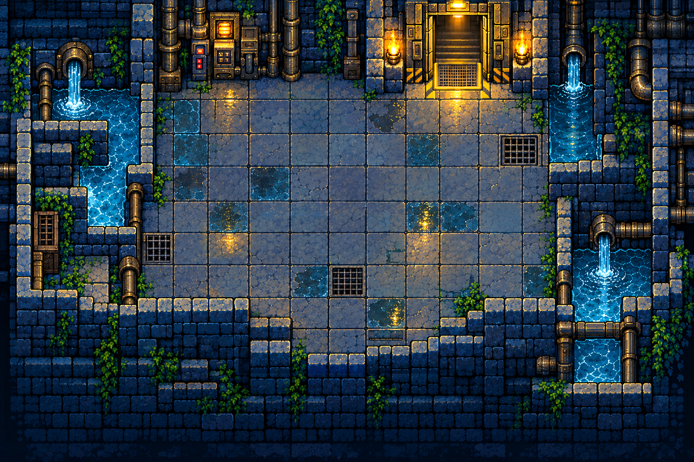
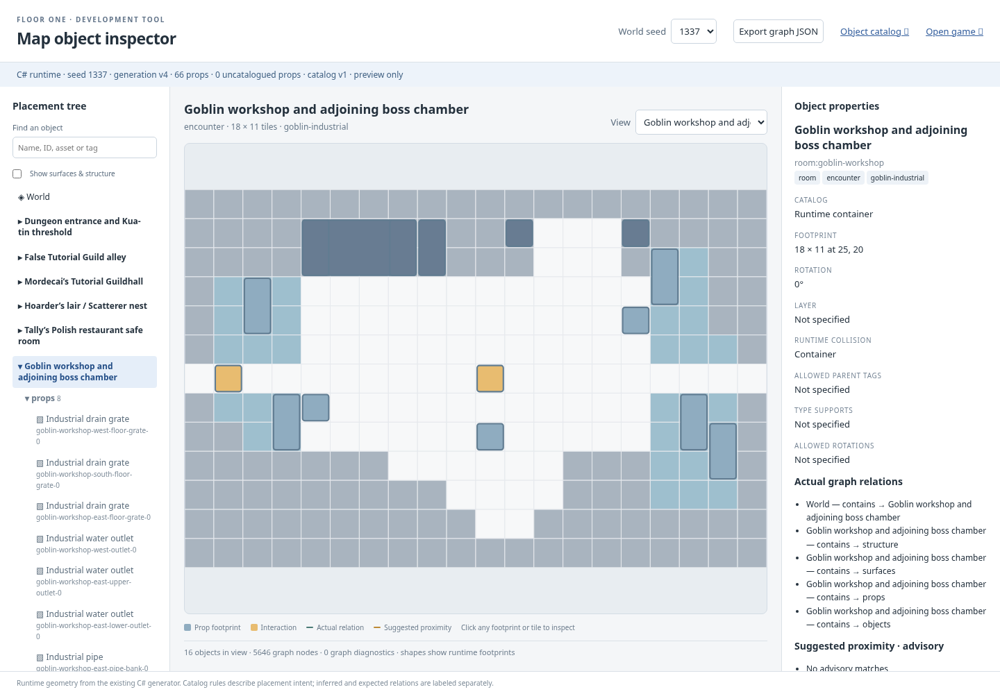
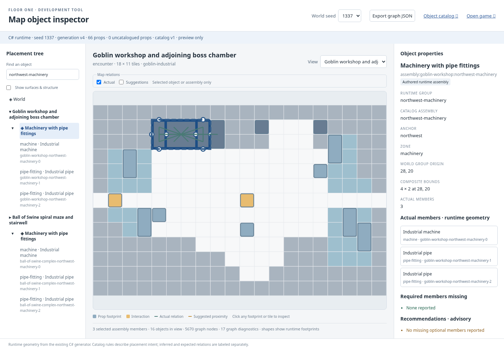
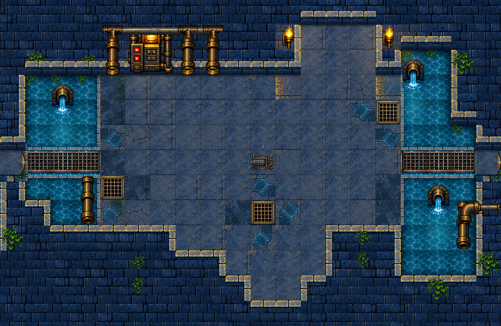
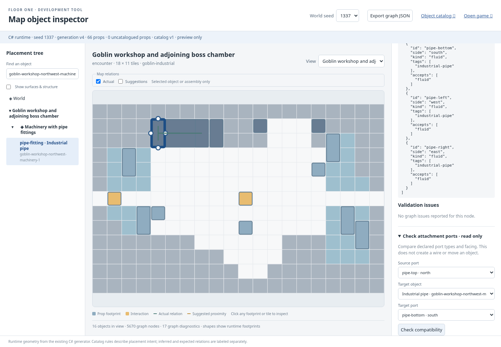

Authored runtime groups now form selectable assemblies with member roles, composite bounds and read-only declared-port checks. Desktop and mobile QA passed for seeds 1337 and 42.
PASS · 31 assemblies per seed · member/parent navigation · all-member highlighting · compatible and incompatible ports · accepted/rejected placement previews · unchanged world · actual JSON downloads


Actual published seed 1337 room captures use a fixed renderer timestamp (1000 ms) and camera-only framing. Final pass-02 room PNG files and world JSON are byte-identical to baseline; source reference is unchanged. Earlier pass-01 retained before a metadata-only catalog correction.




Core C# suite, portable Node graph suite, 91 hosted asset checksums and actual keyboard/canvas encounter playtest passed. Existing arena/bridge evidence retained; unchanged renderer/gameplay did not require a broad replay. See inspector-report.json, pixel-identity.json and capture.json for exact hashes and disclosures.